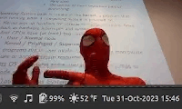
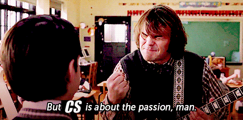

CMSC216 Exit Survey Results
Table of Contents
Summary Statistics for Multiple Choice Questions


nil

nil

nil

nil


nil

nil

nil

nil

nil


Freeform Feedback
Frequent Items in Freeform Feedback
| Count | Comment |
|---|---|
| Exams | |
| 3 | More practice problems for exams please! |
| Projects | |
| 16 | Project 3 on assembly was rough, especially puzzlebin |
| 2 | Project 4 spanning Thanksgiving was lame |
| 2 | Didn't like P4, too "vague" |
| 2 | Overlapping deadlines like project/exam or discussion/project are lame |
| Discussions/HWs | |
| 4 | Liked that HW/Discussion techniques used on projects |
| 2 | Hard to get help in Discussion near project due dates |
| 3 | Discussion exercises could use more content |
| 2 | Discussions felt like lecture, not er… discussion |
Props to Staff Members
A number of staff members were individually thanked by students in their free-form feedback for help during the semester.
| Staff Member | Thank-yous |
|---|---|
| Carter | 4 |
| Clara | 2 |
| Curie | 3 |
| Donghyeon | 2 |
| Gavin | 1 |
| Keith | 4 |
| Sinmi | 3 |
| All TAs | 10 |
Notable Freeform Responses
Student comments are given in plain face.
Instructor responses are italicized.
Lectures
One thing that stood out the most to me which I enjoyed was where you would have Questions mid slides and we were able to discuss and try to answer it with the people next to us.
Glad you liked it.
When kauffman walks around during lectures while we're supposed to be doing a practice exercise to make us feel like we have to be on task, i'd rather he didn't because it feels like high school where we're being babysat and i just wanna do a crossword in lecture every once in a while without feeling guilty or getting a dirty look from the professor
Ten years ago I got tired of chastising students for playing games during lecture exercises and don't bother anymore, not even dirty looks. I try to limit my babysitting as much as possible. What I'm sensing, though, is that you aren't totally at peace with your own decision to duck the exercise and spend time on something else. If you were completely comfortable with that action, my walking by while you filled in a crossword wouldn't be a bother. As Feynman said, "What do you care what other people think?"
My advice: learn to NOT feel guilty if doing a crossword in lecture is what you're up for. Just keep in mind that a typical hour-long lecture costs about $10 (in-state tuition for CMNS is $7267.50, 16-credit load with 3 hours in-class per credit per week over 14 weeks: 7267.50 / (16*3*14) = 10.81 dollars per hour in class). I just hope it's a rewarding crossword at that rate.
Office Hours
Other sections had more TA's than us. Every time I go to 216 office hours are I find TA's from other section setting there doing nothing and no TA's for our section…
I'll look into this. When I arrived at UMD, I had 0 TAs and had a hard time figuring out how to get any. That made me a bit salty. I was given a certain number of TAs and if it is proportionally fewer than other sections, I'll be even more salty.
TAs should only spend so long helping a student if several others are waiting for help. In 132 the Quuly system worked well for receiving help and I wished that it was implemented here too.
My understanding is that Quuly just allows students to Queue for help. It doesn't stop staff from getting caught up trying squash a bug for too long with an individual student. I didn't hear that staff had any particular problem managing the queue of students who wanted help. If that's the case, I'll want to know about it. However, I fully expect at times it was hard for staff to get to everyone. I've been guilty of getting caught up on one problem as well. My general advice and approach is try to spend about 10 minutes top with any one student to move them forward and then iterate. I'm sorry that it didn't feel like staff were clipping along fast enough. Most TAs were first-timers and still learning the ropes. Overall, I was floored by how well TAs performed so I hope you don't hold this shortfall against them.
One thing that has been useful for me in past CS classes is having some office hours via zoom. This semester I found myself having a hard time getting to the OH room because of the location of my other classes and having the option to get help through zoom would have been really helpful while keeping the option to go in-person as well.
I discussed the potential for online office hours with staff early on. There was little enthusiasm to do it regularly. I feel this too: compared to in-person office hours, online office hours are harder to pull off right. That said, we want to make sure that help is available in some form for students in as many situations as we can including those that aren't coming to campus regularly. I'll recruit some folks to hold some online office hours next semester to try to meet folks like yourself where they are at. This is an in-person class so I expect the bulk of office hours will be in person. You shouldn't hesitate to ask staff members if you can set up a meeting online to get help. I expect most TAs and Professors will be open and wiling to meet you in that capacity.
Exams
- A course policy I think that was very fair and refreshing was the open-resource exams.
I actually did not like the open notes aspect of exams. For the first exam I did worse than any exam in my life because I thought my notes would suffice, and it encouraged me to not study as hard. Then for the second exam I studied a lot and did much better even though my computer with my notes on it died five minutes in.
I don't find regurgitating memorized content to be a good assessment of mastery so I give open resource exams that involve problem solving, adaptation, and application of skills we've discussed to novel situations. This is likely closer to what students will face in the wild so it feels better as an assessment tool. It can be a little jarring but I'm glad to hear that folks can adapt and find that, with reasonable preparation, resources actually have minimal impact compared to mastery of problem solving.
Add more practice tests. Solving the practice exam one week before the exam would be better so that we can have time and be more prepared for what to expect in the exam.
Several folks asked for more by way of exam practice. Some even specifically indicated that the HW practice problems aren't good enough. I'll consider how to expand that element of practice. Writing good exam problems is a chore but I'm sure I can come up with something.
More midterms.
Now that is a new suggestion. I'll query the spring sections on whether they'd like to have more exams to see if your sentiment is widely shared…
Projects
I really didn't like the puzzlebin in assembly. I found the GDB in assembly to be very challenging. This was especially true because my GDB kept crashing.
By far the most frequent element of free-form feedback was "puzzlebin blows". I'll first determine why GRACE was causing GDB to crap out while folks were debugging. It was news to me when every student in lecture indicated this happened to them. I had no idea that those issues were so pervasive. Assuming that we can get the debugger to be less flakey, puzzlebin will be more manageable. It sounds like tweaking the difficulty might be in order as well which is also easy to accommodate. Thanks all for letting me know that this one was so vexing.
- The projects were extremely confusing, difficult, and seemed almost entirely pointless compared to what I might see in the real world.
I enjoyed that [the projects] were more practical and loosely tied to a real-world problem.
Opinions have always varied on how "real" projects are.
puzzlebinwas definitely the least close to real and chaffed folks quite a bit. However, every other project problem had some semblance of a "real" use case. I don't expect students to recognize that completely but given enough time, you'll see these much of what we did pop up again and haunt you, hopefully as a friendly ghost. 👻
I think implementing multiple deadlines for individual problems within a project would help students like me who had a hard time getting started and pushed everything until the last couple days possible.
I'll consider this. I tried one semester to implement "milestones" wherein students needed to pass a certain number of test cases by a midpoint deadline. Students that semester complained that it was stressful to have multiple deadlines associated with one project. There is no silver bullet and learning to at least cope with the tendency to put things off is an important part of everyone's development.
Sometimes there were projects assigned in the day before an exam or just relatively super close to an exam data.
I do make projects due before exams often. Working on the project prepares for the exam. I don't recall ever assigning anything immediately before an exam that is necessary to complete to do well on the exam. Remind me if I'm forgetting something that actually happened.
I enjoyed the projects but I would have preferred to have more, the first four were good for learning but the last one was a bit too short.
Likely in the future I'll be able to time the final project a bit easier to have a second problem on it. That was my intent but time slipped away and TAs indicated that the 2nd problem I had planned "was a bit much."
I think the projects in general, are much more difficult than other C projects I've heard of from other classes. I wouldn't be against having more projects that are much easier to write and gives you more opportunity and balance with your grade
Students have suggested in the past splitting projects with 2 distinct problems into separate, shorter projects. I'll consider that but scheduling this is hard I'm fairly satisfied with the current structure.
My only suggestion is better pacing between the last two projects as they were released back to back when there's usually a week break in between the projects.
Thanksgiving is a bit of a pain as it is hard to schedule project through and around it. Spring will be different but now that I have a good idea of the topic pacing for 216, I think the project timing will improve modestly. Sorry you felt a crunch.
Most projects offered at UMD involve release or private tests. I found that not including those tests in this course helped me learn more. I had a much clearer idea of what to write code to solve, and felt more incentive to complete the tests. With private tests specifically, the results often came too late to be useful and felt luck-based. Overall, I had a much better experience with the projects in 216 than other courses.
I really, really don't like "secret judgments" in education. Private tests fall into this category. I have a whole spiel that I can relate about the failings of secret tests and am willing to debate anyone who thinks they are worthwhile. I'm glad that you found the working with test results you can see to be pleasant. It turns out if you give folks a clue about what their code is doing wrong, they might actually be able to fix it…
More writing/explanation like in P5-Writeup throughout other parts of the class forced students to explain concepts for a better understanding - I liked it.
I'll keep that in mind. It's a suggestion that past students have made as well and I agree that it allows students to demonstrate a different and equally important skill set from coding.
Discussions / HW
- For the discussion it would be better if the lecture about the topic that is on the week's discussion happened before the discussion itself.
The discussions were also really helpful as they closely aligned with the projects or exams.
There were times when discussions topics were ahead of lecture topics somewhat. In part this was due to discussion topics being delayed a cycle or so due to technical problems with GRACE at the start of the semester. However, it is intended that discussions sometimes introduce ideas that are filled out in lecture. This may not be ideal but it is a reality of trying to do interesting things in discussion that apply to project work.
The only thing I would say about the discussion sections is that we were given way too much time to complete the exercises.
TAs also commented that there were certain discussion exercises that were way to short. They've given me some decent feedback on that so that we can refine them for future semesters. That should allow some coverage of some topics that were regrettably diminished or cut entirely.
I think the discussions could benefit from more interaction with the students. Right now, it often feels like the TAs are in monologue.
Noted: TAs have little training on how to run a discussion and as they get more experience, I expect the level of interactivity will improve. I'll pass this comment on to them so that we can work on greater engagement in the next cycle.
I enjoy the way that discussion works too because it feels as if I gain something by going to discussion.
Glad to hear it!
Miscellaneous
I think some more code examples would be more beneficial otherwise Professor Kauffman did an excellent job
LOC Code Provided 6355 Lecture code pack C file lines 1142 HW code pack C file lines 1668 Discussion code pack C file lines 9165 Total lines of code in examples Did you really look at all of those? If so, I guess you're looking for me to give at least 10K of examples…
Make grace compatible with public key authentication, would make logins much easier.
Oh man, that would be so nice. It would be like… my last University which had a reasonably modern, reasonably administered set of Linux machines with really great connection features, password-free key authentication being one of them. I'm working on it but when my contact with GRACE's IT admin told me they have been trying to figure out how to modernize for the last 15 years, I'm not sure how fast we'll see changes.
I do wish the engagement point policy was a little more clear - I didn't know that it was part of the grade and not extra credit until the second-to-last week.
I answered questions about this and it's laid out pretty unambiguously in our syllabus: https://kauffman77.github.io/216/syllabus.html#engagement-points
Of course, folks have to read the syllabus to get that clarity…
I think it was due to my lack of focus and commitment due to external factors like my job that I performed poorly this semester.
Some important lessons come not from coursework but from the struggle to find time to do coursework. Getting a degree is ideally a full-time job and anyone who is able to manage to hold a serious job while they pursue their degree has my deepest respect. That said, whenever possible (and it's not always possible), limit your commitments to allow you to focus. I believe Ron Swanson put this best:

I think it would be easier if the whole setup process/connecting to Grace was a recorded video because doing it in discussion sections was hectic.
A setup video is highly desirable and something I've put considerable effort into at my past uniersity. I'm disappointed that I didn't have enough time to do something similar for GRACE but will be endeavoring to do so going forward.
Advice to Future Students
- For future students: let them know to always start projects early because that was super helpful for me to make sure I was not panicking at the last second.
- As a student learning in this course I felt that if you put in the work and try to keep up with everything and not fall behind you could succeed in this course.
Sage advice all around.
Legit Concerns
The only thing that sometimes scared me when working with grace was that there were times tests just didn't pass when they passed 2 seconds ago. I think this is mostly just a grace issue but I did get worried when I saw some tests failed randomly on certain projects.
This is completely unsatisfactory and I'll be working to correct these intermittent test failures. I'll perhaps recruit some students from this fall who experienced them to see if any of the fixes work.
PLEASE FOR THE LOVE OF GOD!!!! PUT THE HW AND DISCUSSION AND ALL OTHER ASSIGNMENTS ON CANVAS!!!! YOU'RE THE ONLY PROF WHO DOESN'T DO IT AT ALL AND IT'S CAUSED ME AND MY PEERS TO MISS MULTIPLE MINOR ASSIGNMENTS IN YOUR CLASS!!!
I know, I know… I've gotten lampooned for this before and I know I should sync the Gradescope assignments to Canvas so students can see all their deadlines in the same place. The only thing stopping me is the tedium: assignment deadlines don't sync between the two systems (at least they didn't when did this in Spring '23) so that means 5 projects, 13 discussions, 13 HWs, each entered both on Gradescope and set on Canvas. I'll do it but I'm sure I'll enter some dates wrong and get griped at. It might be a good time to learn the Canvas API to see if a script could solve this…
The entire concept of Assembly was straight up useless and served no purpose other than to piss me off.
This reminds me of a recording of a talk at a reasonably big conference where the speaker was ranting in a similar fashion: "It's 202x, assembly is completely irrelevant, there are so way better languages, why don't they make assembly better and more like them…" Like the above commenter, it made me chuckle and tune out as the viewpoint is missing a fundamental understanding of why assembly exists. It's like a physicist saying "look at how complex quantum mechanics is; it's much easier to reason about things if we ignore quantum effects, let's do that!" It sounds silly because quantum mechanics characterizes reality pretty well. Glossing over it gets wrong answers and willfully ignores a lower-level of known truth. In computing, if you are running programs in any language on a normal computer (e.g. not paper/pencil, not imaginary, not quantum), the CPU is really executing assembly instructions. If you want this to own the "science" part of "computer science", it's best to make peace with the nature of the beast. It's fine if you wish to be frustrated when coding assembly and find ways to avoid it professionally. But being pissed off at assembly is like being pissed off at quantum mechanics, gravity, or electromagnetism: you're likely to stay pissed because they aren't going anywhere.
I know from other students that usually "piping" of processes and creating MAKE files are covered. The latter seems to be quintessential so I would've liked to cover it.
Being new, I haven't quite gotten a grip on how other instructors manage to hit all the topics in the course. I'm getting a better idea of that and I'd love to add Pipes and Makefiles into the mix. As was commented earlier, there is some room to grow for the discussion exercises so I think this is possible. I want to make sure, though, that as topics get added, they fit in and have appropriate detail associated with them. Otherwise, students are better off learning about it outside of the class which is doable for both these topics.
I think the open resource exams and hand-holding in the projects make the class a bit too easy. I'm not saying all the resources were bad, but if in the future I need to code a block of assembly, I would have to look things up whereas someone else might just have remembered from their coursework.
Working backwards, I'd be quite surprised if ANY student a year from now could easily remember how to code assembly from scratch. That goes for those who had closed resource exams. There are a LOT of details to remember about C, Assembly, and systems programming. While memorizing some of it may allow recall for a short time, everyone will forget those details over time. Being able to use a resource to quickly re-acquaint oneself is a necessary skill in a computing career. That's why I favor open resource exams.
I'm glad that you found the course easy. If you were the only student I was teaching, I could have easily upped the stakes for you. However, my job is to assess overall student understanding across the entire population of the class. So far things look to be about where I'd like them. There is a bit of refinement to do, but I need to weigh your opinion against those that stated the opposite, that the course was too hard. As they say, the sign of a good compromise is that everyone is equally unhappy.
Speed-Listening
- Kauffman does talk pretty fast but he's doing his best and I can respect him for that.
- That's so funny about the 1.5x, but it's so true.
- Kauffman talks too fast to play at 1.5x on videos
- I am able to fully comprehend him at 1.75x speed, which I truly appreciate.
- Recorded lectures keep my attention the best personally at 2x speed and pausing when needed.
- Kauffman talks clearly enough to play at 2.5x speed, don't worry.
The Far Side
Spider man outfit was nice.
I'll let Prof. Parker know his presence was appreciated.

I like the jokes for puzzlebin and loved the Sonic easter egg for project 5.
Anyone who says programs can't be fun isn't trying hard enough.
Sometimes I think Kauffman gets a bit too excited and carried away with an unimportant topic and then it's difficult for students to follow along what's going on

It's pretty hard to make C interesting, even a very energetic person would make me fail to be entertained.